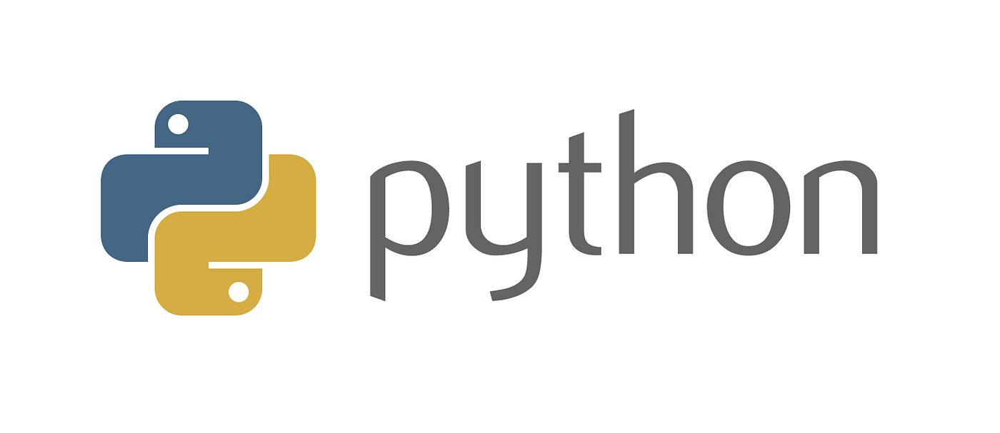

Python é uma linguagem Muito utilizada Foi lançada por Guido van Rossum em 1991.utilizada para uma variedade de tarefas de programação, desde o desenvolvimento de aplicativos Web e de desktop até a análise de dados é uma linguagem muito versatil ja que seus codigos são faceis de escrever i
Java é uma linguagem de programação muito utilizada para desenvolver jogos, aplicações Web, aplicativos móveis. sua linguagem Java permite que os programas escritos em Java possam ser executados em varias plataformas.C# é uma linguagem de programação criada pela Microsoft como parte da plataforma .NET lançada em 2000 e é uma das linguagens mais populares para o desenvolvimento de aplicativos Windows.R é uma linguagem de programação como tambem um ambiente de software com foco na análise de dados e estatística, com grandes ferramentas para manipulação e visualização de dados, permitindod a criação de gráficos e análises estatísticas complexas